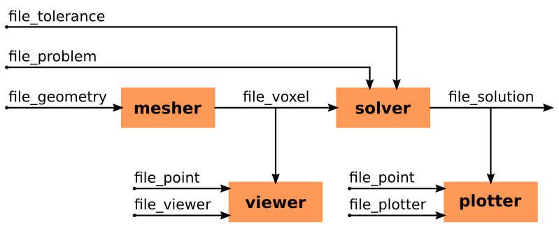

Workflow
Tools
mesher
Create the voxel structure
Import the geometry from voxel files
Import the geometry from STL files
Create the geometry with stacked PNG files
Draw the geometry with stacked 2D vector shapes
Assign different domain names to the voxels
Resampling (refine) the voxel structure
Construct the graph of the structure and detect connected components
viewer
Visualization of the different domains composing the voxel structure
Visualization of the connected components composing the voxel structure
Comparison of the voxelized and original geometries
solver
Computation of the incidence matrix
Computation of the Green and coupling tensors
Computation of the resistance, inductance, and potential matrices
Computation of the electric-magnetic coupling matrices
Creation of the equation system
Extraction of a sparse pre-conditioner
Extraction of a matrix-vector linear operator for the full system
Check the condition number of the system
Solve the equation system with the pre-conditioner and the linear operator
Extract the solution (terminal voltages and currents, scalar fields, and vector fields)
plotter
Plot the material description (materials and sources)
Plot the scalar and vector fields of the different voxels
Plot the magnetic field generated by the voxels
Plot the solver convergence and residuum
Workflow
Entry Points and Scripts
PyPEEC can be install from PyPi with the following command: pip install pypeec.
The entry points of the different tools are located in the pypeec.main
Running the tools with files as input/ouput:
run_mesher_filefor running the mesherrun_viewer_filefor running the viewerrun_solver_filefor running the solverrun_plotter_filefor running the plotter
Running the tools with data as input/ouput:
run_mesher_datafor running the mesherrun_viewer_datafor running the viewerrun_solver_datafor running the solverrun_plotter_datafor running the plotter
Additionally, a command line tool is located in the pypeec.script module:
pypeec --helpfor displaying the command line optionspypeec mesherfor running the mesherpypeec viewerfor running the viewerpypeec solverfor running the solverpypeec plotterfor running the plotterpypeec examplesfor installing the examples
Input/Output File Description
The following input files (JSON or YAML format) are used:
file_geometry(JSON or YAML, input file): description of the geometryfile_problem(JSON or YAML, input file): description of the magnetic problemfile_tolerance(JSON or YAML, input file): description of the solver numerical optionsfile_point(JSON or YAML, input file): point cloud for evaluating the magnetic fieldfile_viewer(JSON or YAML, input file): options for the plots generated by the viewerfile_plotter(JSON or YAML, input file): options for the plots generated by the plotter
The following files (Pickle format) are generated:
file_voxel(Pickle, output file): file with the definition of the voxel structurefile_solution(Pickle, output file): file with the solution of the magnetic problem